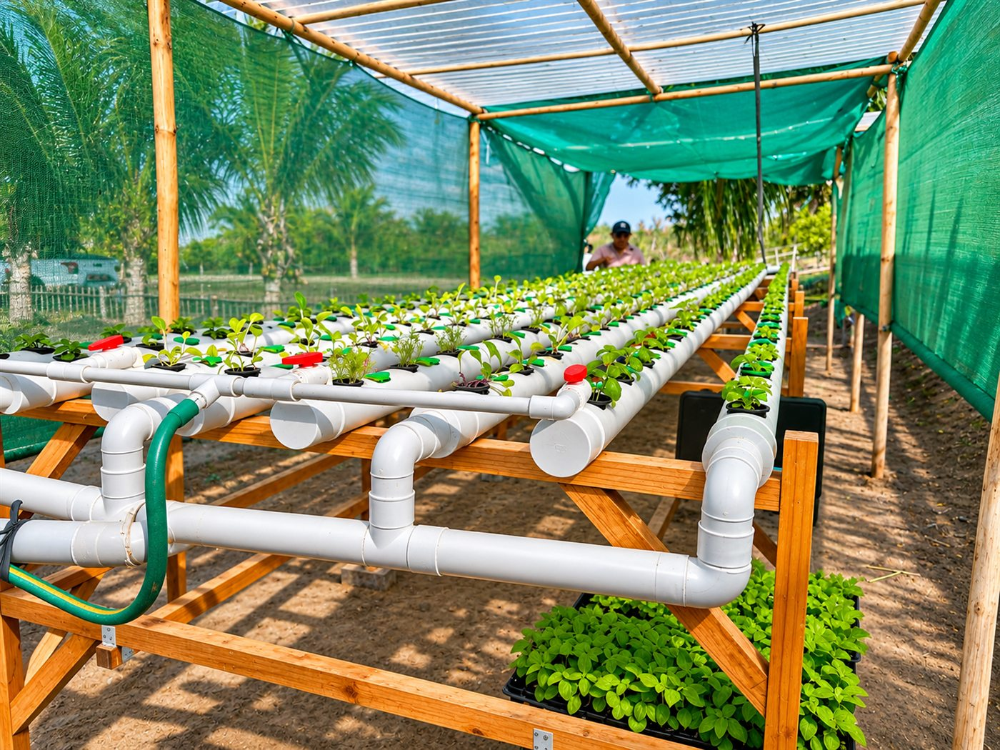
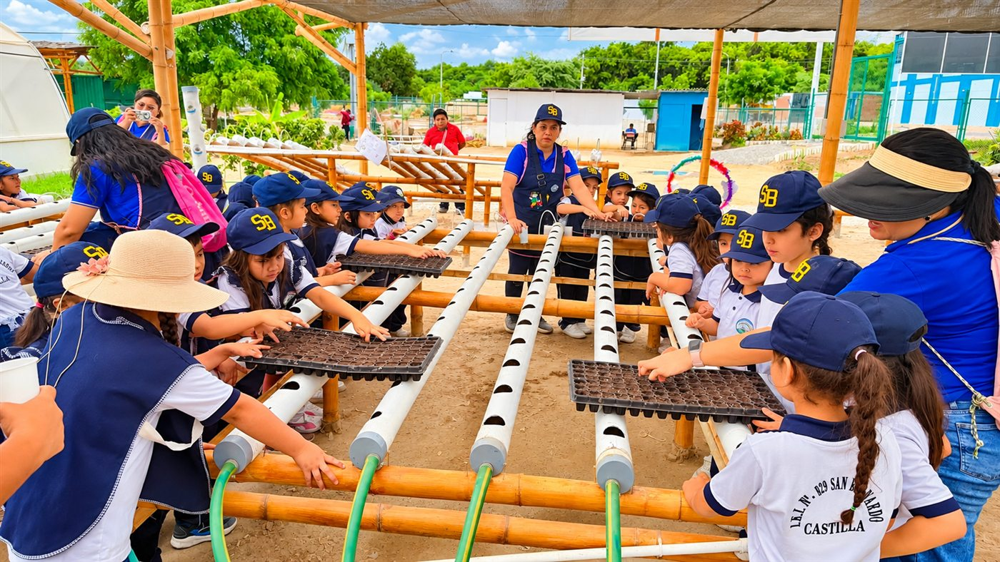
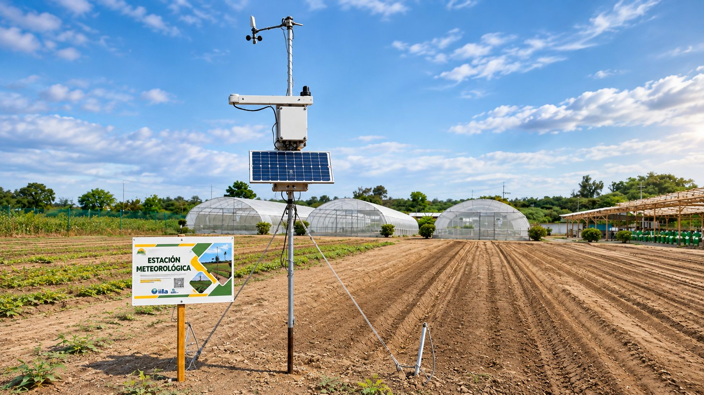
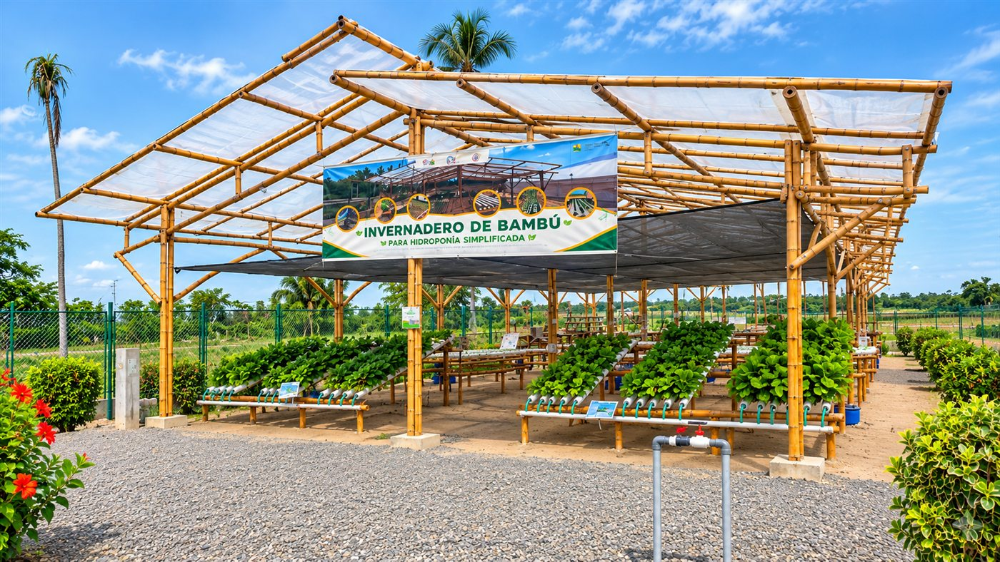

01Experimentación
Probamos cultivos, variedades y sistemas de riego en ambientes controlados para saber qué funciona en el clima de Piura antes de llevarlo al campo.
- Ensayos de cultivo
- Hidroponía
- Registro de resultados
Cuatro ambientes protegidos, cada uno pensado para probar una técnica distinta. Pasa el cursor sobre uno para verlo girar en 3D, o tócalo para recorrerlo por dentro.
Cuatro líneas que se complementan: probamos, enseñamos, medimos y producimos cuidando el agua.

01Probamos cultivos, variedades y sistemas de riego en ambientes controlados para saber qué funciona en el clima de Piura antes de llevarlo al campo.

02Talleres y visitas guiadas para agricultores, estudiantes y técnicos: aprender viendo y haciendo, con los invernaderos como aula.

03La estación mide el clima cada 30 minutos; con esos datos calculamos la ETo y el agua exacta que pide cada cultivo.

04Bambú, recirculación de nutrientes y riego por goteo: técnicas que ahorran agua y cuidan el suelo frente al cambio climático.
Pasa el cursor sobre una tarjeta para traerla al frente.
Gira, acerca y activa la vista interior para ver cómo está organizado cada espacio.
Cada 30 minutos la estación del CECASP mide el clima. En cuatro pasos, ese dato se convierte en los litros de agua que necesita cada cultivo.
Los sensores de la estación registran temperatura, humedad, viento, radiación solar, lluvia y la humedad del suelo.
Cada lectura llega a esta web y se guarda en el historial, que se puede consultar y descargar en Excel.
Con el método FAO-56 Penman-Monteith se estima cuánta agua pierde en un día un pasto bien regado.
La ETo se ajusta a cada cultivo según su etapa (Kc) y se obtiene el agua que de verdad necesita: ni más, ni menos.
Ejemplo con datos reales · ayer
En una parcela de 100 m² son unos – litros en un día.
El centro nació del proyecto “Agricultura sostenible y resiliente al cambio climático en Piura, Perú”, financiado por la Cooperación italiana y ejecutado por la IILA.
El CECASP funciona en el campus de la UNP, en Castilla. Junto con el gobierno local y los agricultores de la zona, convierte la investigación en formación práctica para enfrentar la escasez de agua.
Organización Internacional Ítalo-Latinoamericana. Coordina el proyecto y la transferencia de conocimiento.
Agencia Italiana de Cooperación para el Desarrollo. Financia el proyecto y la infraestructura del centro.
Clima de hoy, gráficas, ETo y ETc por cultivo, y todo el historial para descargar en Excel.
Abrir estación meteorológica↗Coordinamos visitas técnico-educativas para agricultores, colegios, universidades e investigadores.
Te responderemos al correo que indiques para confirmar la fecha.